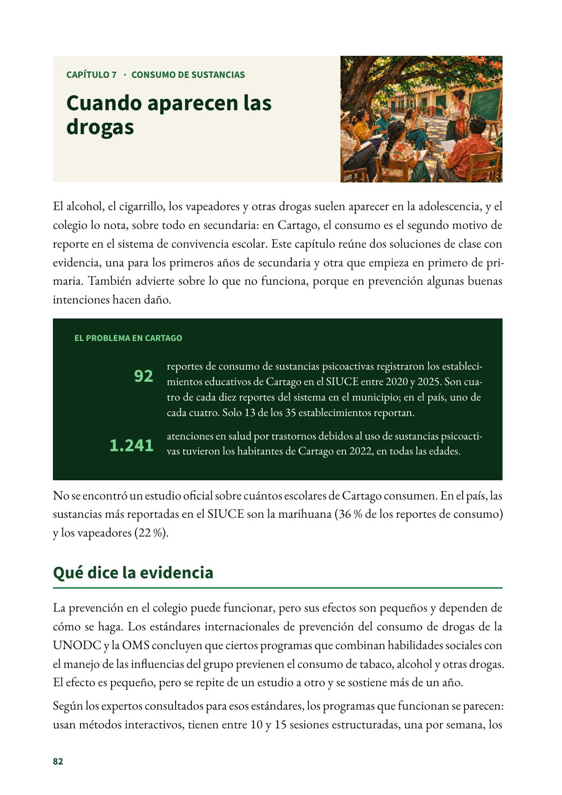
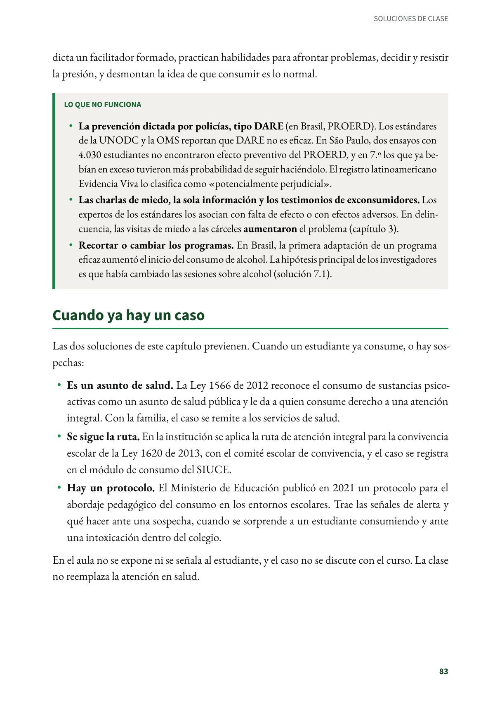
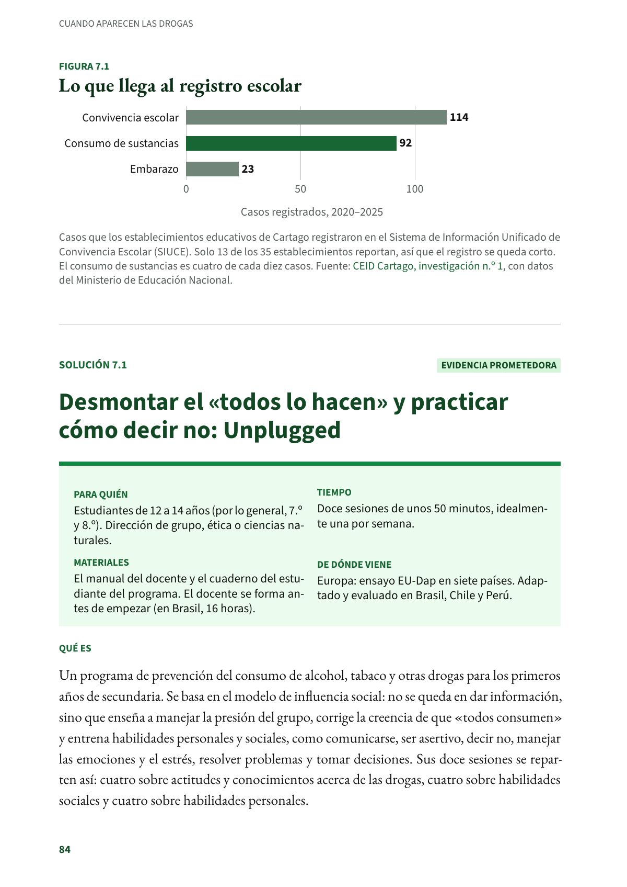

Cuando aparecen las drogas
El alcohol, el cigarrillo, los vapeadores y otras drogas suelen aparecer en la adolescencia, y el colegio lo nota, sobre todo en secundaria.
PDF · 3 págs. · 1,2 MBEl alcohol, el cigarrillo, los vapeadores y otras drogas suelen aparecer en la adolescencia, y el colegio lo nota, sobre todo en secundaria: en Cartago, el consumo es el segundo motivo de reporte en el sistema de convivencia escolar. Este capítulo reúne dos soluciones de clase con evidencia, una para los primeros años de secundaria y otra que empieza en primero de primaria. También advierte sobre lo que no funciona, porque en prevención algunas buenas intenciones hacen daño.
El problema en Cartago
- 92 reportes de consumo de sustancias psicoactivas registraron los establecimientos educativos de Cartago en el SIUCE entre 2020 y 2025. Son cuatro de cada diez reportes del sistema en el municipio; en el país, uno de cada cuatro. Solo 13 de los 35 establecimientos reportan.
- 1.241 atenciones en salud por trastornos debidos al uso de sustancias psicoactivas tuvieron los habitantes de Cartago en 2022, en todas las edades.
No se encontró un estudio oficial sobre cuántos escolares de Cartago consumen. En el país, las sustancias más reportadas en el SIUCE son la marihuana (36 % de los reportes de consumo) y los vapeadores (22 %).
Qué dice la evidencia
La prevención en el colegio puede funcionar, pero sus efectos son pequeños y dependen de cómo se haga. Los estándares internacionales de prevención del consumo de drogas de la UNODC y la OMS concluyen que ciertos programas que combinan habilidades sociales con el manejo de las influencias del grupo previenen el consumo de tabaco, alcohol y otras drogas. El efecto es pequeño, pero se repite de un estudio a otro y se sostiene más de un año.
Según los expertos consultados para esos estándares, los programas que funcionan se parecen: usan métodos interactivos, tienen entre 10 y 15 sesiones estructuradas, una por semana, los dicta un facilitador formado, practican habilidades para afrontar problemas, decidir y resistir la presión, y desmontan la idea de que consumir es lo normal.
Lo que no funciona
- La prevención dictada por policías, tipo DARE (en Brasil, PROERD). Los estándares de la UNODC y la OMS reportan que DARE no es eficaz. En São Paulo, dos ensayos con 4.030 estudiantes no encontraron efecto preventivo del PROERD, y en 7.º los que ya bebían en exceso tuvieron más probabilidad de seguir haciéndolo. El registro latinoamericano Evidencia Viva lo clasifica como «potencialmente perjudicial».
- Las charlas de miedo, la sola información y los testimonios de exconsumidores. Los expertos de los estándares los asocian con falta de efecto o con efectos adversos. En delincuencia, las visitas de miedo a las cárceles aumentaron el problema (capítulo 3).
- Recortar o cambiar los programas. En Brasil, la primera adaptación de un programa eficaz aumentó el inicio del consumo de alcohol. La hipótesis principal de los investigadores es que había cambiado las sesiones sobre alcohol (solución 7.1).
Cuando ya hay un caso
Las dos soluciones de este capítulo previenen. Cuando un estudiante ya consume, o hay sospechas:
- Es un asunto de salud. La Ley 1566 de 2012 reconoce el consumo de sustancias psicoactivas como un asunto de salud pública y le da a quien consume derecho a una atención integral. Con la familia, el caso se remite a los servicios de salud.
- Se sigue la ruta. En la institución se aplica la ruta de atención integral para la convivencia escolar de la Ley 1620 de 2013, con el comité escolar de convivencia, y el caso se registra en el módulo de consumo del SIUCE.
- Hay un protocolo. El Ministerio de Educación publicó en 2021 un protocolo para el abordaje pedagógico del consumo en los entornos escolares. Trae las señales de alerta y qué hacer ante una sospecha, cuando se sorprende a un estudiante consumiendo y ante una intoxicación dentro del colegio.
En el aula no se expone ni se señala al estudiante, y el caso no se discute con el curso. La clase no reemplaza la atención en salud.
Fuentes del capítulo
Fuentes
Alcaldía de Cartago. (2024). Plan Territorial de Salud 2024-2027, tabla 39. 2025.cartago.gov.co
Centro de Estudios e Investigaciones Docentes Cartago. (2026). Radiografía de la educación pública en Cartago: lo que dicen los datos oficiales (2026) (Investigaciones del CEID, n.º 1). Subdirectiva SUTEV Cartago. doi.org
Congreso de la República de Colombia. (2012). Ley 1566 de 2012, arts. 1 y 2. secretariasenado.gov.co
Congreso de la República de Colombia. (2013). Ley 1620 de 2013, art. 29. secretariasenado.gov.co
Ministerio de Educación Nacional. (2021). Protocolos para el abordaje pedagógico de situaciones de riesgo en el marco de la Ruta de Atención Integral para la Convivencia Escolar. colombiaaprende.edu.co
Ministerio de Educación Nacional. (2025). Informe anual del Sistema de Información Unificado de Convivencia Escolar (SIUCE). mineducacion.gov.co
Petrosino, A., Turpin-Petrosino, C., Hollis-Peel, M. E. y Lavenberg, J. G. (2013). «Scared Straight» and other juvenile awareness programs for preventing juvenile delinquency. Cochrane Database of Systematic Reviews, (4), CD002796. doi.org
Sanchez, Z. M., Burkhart, G., Hoffmann, E. V., Salazar, F. y Gervilla, E. (2025). Advancing the implementation of evidence-based substance use prevention in Latin America: The Evidencia Viva program registry. Revista Panamericana de Salud Pública, 49, e64. doi.org
Sanchez, Z. M., Valente, J. Y., Gusmões, J. D. P., Ferreira-Junior, V., Caetano, S. C., Cogo-Moreira, H. y Andreoni, S. (2021). Effectiveness of a school-based substance use prevention program taught by police officers in Brazil: Two cluster randomized controlled trials of the PROERD. International Journal of Drug Policy, 98, 103413. doi.org
United Nations Office on Drugs and Crime y World Health Organization. (2018). International standards on drug use prevention (2.ª ed. actualizada). UNODC. unodc.org
Así se ve en el libro
3 páginas

